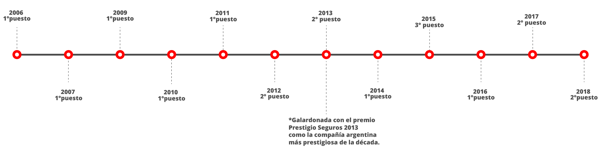

Más información en www.swissmedical.com.ar
Más información en www.swissmedicalcenter.com.ar
Swiss Medical Center Barrio Norte
Av. Pueyrredón 1443, CABA.
Swiss Medical Center Microcentro
25 de Mayo 264, CABA.
Swiss Medical Center Barrio Parque
San Martín de Tours 2980, CABA.
Swiss Medical Center Recoleta
Junín 1191, CABA.
Swiss Medical Center Almagro
Pringles 1337, CABA.
Swiss Medical Center de los Arcos
Guatemala 5455, CABA.
Swiss Medical Center Olivos
Maipú 1641, Olivos.
Swiss Medical Center Lomas de Zamora
Vicente Oliden 141/151, Lomas de Zamora.
Swiss Medical Center Berazategui
Av. Mitre 1301, Berazategui.
Swiss Medical Center Neuquén
Fotheringham 155, Neuquén.
Swiss Medical Center Campana
Colón 257, Camapana.
Swiss Medical Center Punta del Este
Avda. Río Branco y Roosevelt, Parada 9.7, Punta del Este.
Swiss Medical Center Barrio Norte
Av. Santa Fe 2485 - 1º piso
Clínica Zabala
Av. Cabildo 1295 - 2º subsuelo
Swiss Medical Center Recoleta
Junín 1191 - 1º piso
Swiss Medical Center Microcentro
(Exclusivo Adultos) - 25 de mayo 264 - PB
Swiss Medical Center Recoleta
Junín 191 3º piso, CABA.
Centro Odontológico Charcas
Charcas 3391, CABA.
Swiss Medical Center Microcentro
25 de mayo 264 1º piso, CABA.
Centro odontológico Caballito
Av. Pedro Goyena 1202, CABA.
Swiss Medical Center Implantes
Av. Pueyrredón 1416 3º piso, CABA.
Swiss Medical Center Lomas de Zamora
Vicente Oliden 141/151, Lomas de Zamora.
Centro Odontológico Neuquén
Fotheringham 155, Neuquén.
Centro Odontológico Salta
España 943 4º piso, Salta.
Swiss Medical Center Campana
Colón 257, Camapana.
Más información en www.fundacionsm.org.ar
Visitanos en www.smgcells.com.ar o acercate a nuestras oficinas para más información.
Se encuentra estratégicamente establecida en una cuenca de Vaca Muerta, la cuenca petrolera más importante de nuestro país.
Añelo se ubica en la provincia de Neuquén 100km al norte de la ciudad capital de la provincia, conectada a la red vial neuquina a través de las rutas provinciales asfaltadas 7 y 17.
Base para ambulancias UTIM 4x4: Ante una emergencia o urgencia que suceda en el campo podemos trasladar al paciente a nuestra base o clínica más cercana.
Trailer sanitario: Totalmente equipados como consultorios de primeros auxilios para atender enfermedades inculpables y asistencia inicial en emergencias y urgencias.
Helipuerto con helicóptero propio: Nuestro helicóptero cumple con todas las características necesarias para la realización de tareas médicas en el traslado de pacientes con patologías de alta gravedad o en riesgo de muerte.
Medicina laboral: Nuestra prestación le ofrece un completo servicio en medicina del trabajo e higiene y seguridad, cumpliendo con la legislación vigente. Además, otorga asesoramiento en medicina preventiva para el personal de su empresa.
AMATISTA: Un seguro que permite disponer de un capital para que, en caso de fallecimiento del Asegurado, su familia pueda continuar con el standard de vida habitual.
LIFE PLANNING: Un programa de ahorro a largo plazo para cubrir las necesidades financieras del Asegurado, acumulando un capital a resguardo de los altibajos del mercado.
ZAFIRO: Brinda la protección económica necesaria durante un período de tiempo específico y determinado, tanto para el Asegurado como para su familia.
AP GLOBAL: Un plan que brinda protección las 24 horas, los 365 días del año, asegurando un respaldo económico ante diferentes situaciones imprevistas.
SEGURO DE SALUD: Es un seguro indemnizatorio, utilizado para complementar la obra social o prepaga.
SEGURO DE SEPELIO: Ante un fallecimiento, además de proteger económicamente a los seres queridos del Asegurado, les evitará tener que hacer frente a trámites dolorosos y desconocidos.
Más info: www.swissmedicalseguros.com
AMATISTA EMPRESA: Es un seguro colectivo que le permitirá al Tomador contar con el capital necesario para afrontar situaciones que pueden poner en riesgo la continuidad de su Compañía en caso de que falleciera alguno de los socios o la persona clave para el desarrollo del negocio.
VIDA COLECTIVO OPTATIVO: Es un plan pensado para brindar un suplemento al Seguro de Vida Obligatorio a un costo mucho menor que si los empleados contrataran un Seguro de Vida en forma particular.
CONVENIOS COLECTIVOS: Seguro que brinda el respaldo requerido para que la Compañía pueda cumplir con las exigencias establecidas por los diferentes convenios laborales.
ACCIDENTES PERSONALES: El seguro más accesible para proteger a los colaboradores de una Compañía por fallecimiento e invalidez, las 24 horas, los 365 días y en todo el mundo.
CONTRATO DE TRABAJO: Un plan que protege a la Compañía de las obligaciones de la Ley de Contrato de Trabajo frente al fallecimiento o invalidez del trabajador, en forma complementaria al seguro de vida obligatorio.
AP ESCOLAR: Cobertura especialmente diseñada para instituciones educativas.
BECAS ESCOLARES: Protege a los alumnos de una institución educativa garantizando que puedan terminar sus estudios ante el fallecimiento de la persona que es sostén de la familia.
SALUD: El Seguro de Salud es la mejor manera de complementar la cobertura médica de los empleados de una Compañía.
SALDO DEUDOR: Plan que permite asegurar el pago de una deuda contraída con la Compañía ante el fallecimiento del deudor, sin necesidad de acciones para su cobro ni pérdida de patrimonio.
CUIDADOS EN EL HOGAR: Respaldo económico necesario para afrontar gastos para el cuidado personal de un individuo en su hogar por convalecencia prolongada.
RETIRO COLECTIVO: Plan que permite brindarle al personal más valioso de la Compañía el acceso a planes de pensión como complemento del Sistema Previsional.
SEGURO DE SEPELIO: Un plan pensado para brindar una respuesta efectiva en el difícil momento que atraviesa la familia ante la pérdida de un ser querido.
Más info: www.swissmedicalseguros.com
Se trata del premio a las aseguradoras más prestigiosas del país. Desde el año 2003, Grupo Sol y CEOP Latam
lo otorgan anualmente a las compañías de seguros más valoradas por sus públicos de interés: productores de seguros,
ejecutivos del sector, asegurados y no asegurados. Mediante estos premios, se busca reconocer el esfuerzo de las compañías
por superarse y aportar al crecimiento del país y del bienestar social a partir de su accionar.
Nuestra compañía de Seguros de Vida y Retiro ha sido galardonada a lo largo de los años con los primeros puestos de la categoría "Seguros de Vida".
Calificación AAA
Desde 1999, nuestra compañía de Seguros de Vida y Retiro es calificada como CATEGORÍA AAA por la Evaluadora Latinoamericana, el agente de calificación de riesgo especialista en entidades financieras, compañías de seguros, SGRs y fiduciarios.
La categoría AAA refleja Ia más alta capacidad de pago en los términos y plazos pactados, sin verse afectada ante posibles cambios en la compañía, la industria o la economía.
Más información: www.evaluadora.com
Miembro del IGP (International Group Program)
El IGP es un programa creado por la compañía John Hancock para ayudar a las empresas multinacionales que otorgan a sus empleados el beneficio de Seguros de Vida a administrar eficientemente políticas y costos poniendo en común sus planes para todas las subsidiarias del mundo, acorde a los lineamientos de las casas matrices.
Bajo el lema "We Are Where You Are", la compañía John Hancock, a través de su programa IGP, opera en más de 70 países por medio de compañías de seguros locales cuidadosamente seleccionadas por su liderazgo, prestigio y solidez financiera, siendo, nuestra compañía de Seguros de Vida y Retiro la elegida para su representación en la Argentina, desde el año 2004.
Más información: www.igpinfo.com
Compañia autorizada por MDRT (Million Dollar Round Table)
Desde 2014, nuestra compañía de Seguros de Vida y Retiro está autorizada por MDRT para certificar y brindar a sus productores la posibilidad de calificar para ser miembros de esta prestigiosa organización creada en 1927.
MDRT es una asociación internacional, independiente, con aproximadamente 66.000 profesionales de seguros y servicios financieros, líderes en el mundo, de más de 500 compañías pertenecientes a 72 naciones y territorios. Los miembros de MDRT demuestran un conocimiento profesional excepcional, una estricta conducta ética y un servicio al cliente sobresaliente. La membresía de MDRT está reconocida internacionalmente como la norma de excelencia en ventas en la industria aseguradora de vida y en el negocio de los servicios financieros.
La reunión anual MDRT es la mayor convención de profesionales de seguros y servicios financieros en el mundo. Aproximadamente 13.000 miembros MDRT e invitados especiales asisten cada año, incluyendo directores ejecutivos de empresas, agentes de marketing y Directores Generales.
Más información: www.mdrt.org
Casa Central | C.A.B.A.
Comodoro Rivadavia
Córdoba
Corrientes
Mendoza
Neuquén
Paraná
Río Cuarto
Rosario
Salta
San Juan
Santa fe
Tucumán
Ushuaia
Casa Central | C.A.B.A.
Comodoro Rivadavia
Córdoba
Corrientes
Mendoza
Neuquén
Paraná
Río Cuarto
Rosario
Salta
San Juan
Santa fe
Tucumán
Ushuaia
Más información en www.cymsa.com.ar
Más información en www.sanatoriodelosarcos.com.ar
Más información en www.sanatorioagote.com.ar
Más información en www.clinicazabala.com.ar
Más información en www.clinicaolivos.com.ar
Más información en www.sanatorioaltosdesalta.com.ar